01
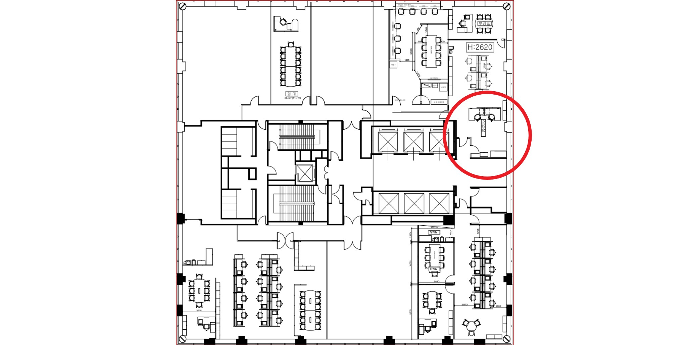
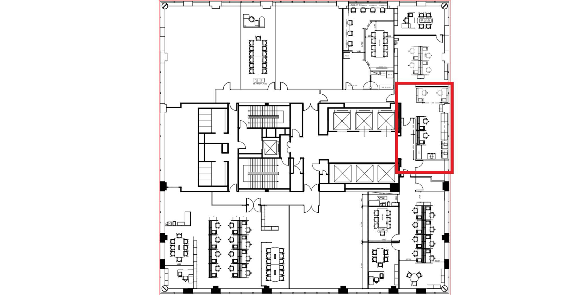
PLANNING : 선의 진화
2인 업무 공간을 4인 체제로 확장하며 고밀도 수납 라인을 구축했습니다.
개인의 독립성을 보장하면서도 유기적으로 연결되는 평면을 제안했습니다.
02
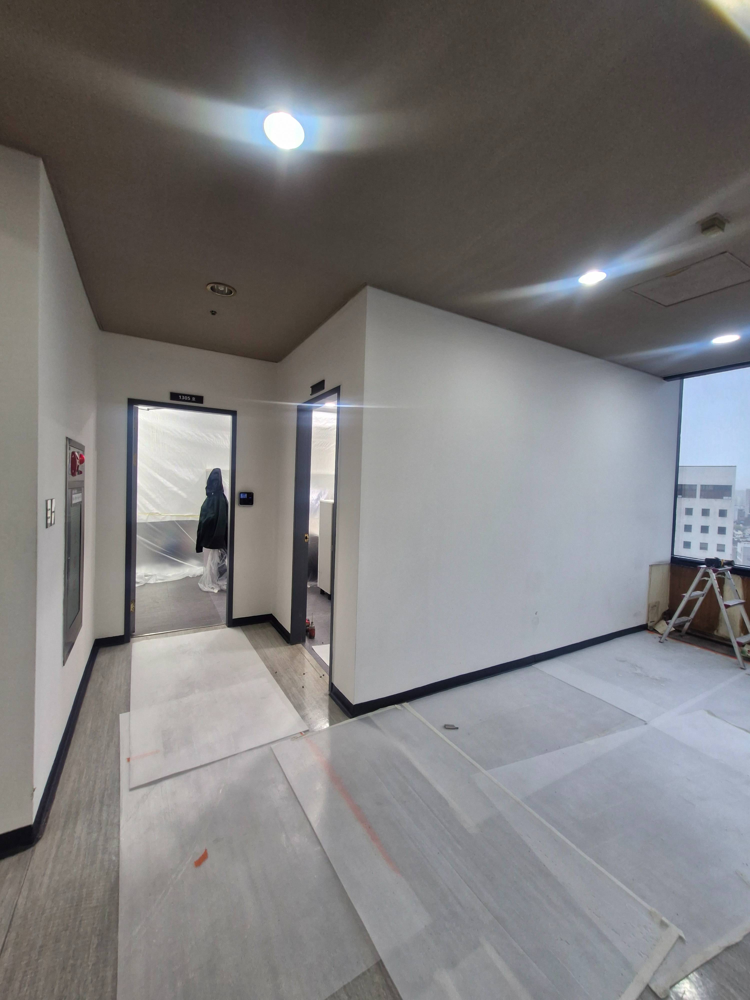
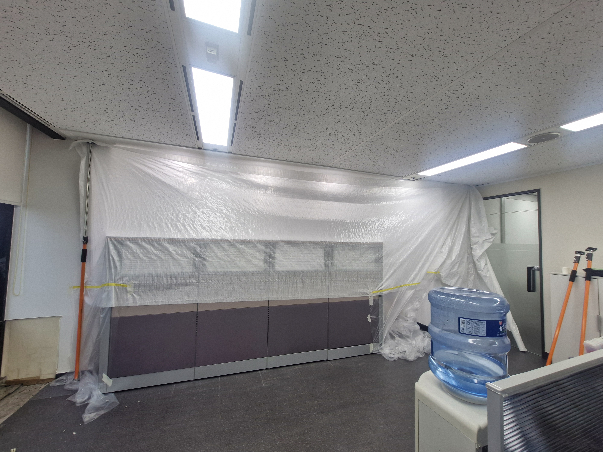
PROTECTION : 기본의 시작
본격적인 공사에 앞서 기존 시설물을 보호하는 정갈한 보양 작업입니다.
(주)결의 정직함은 현장을 대하는 이 작은 배려에서부터 시작됩니다.
03
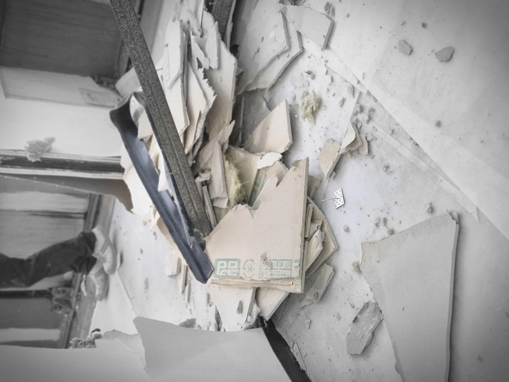
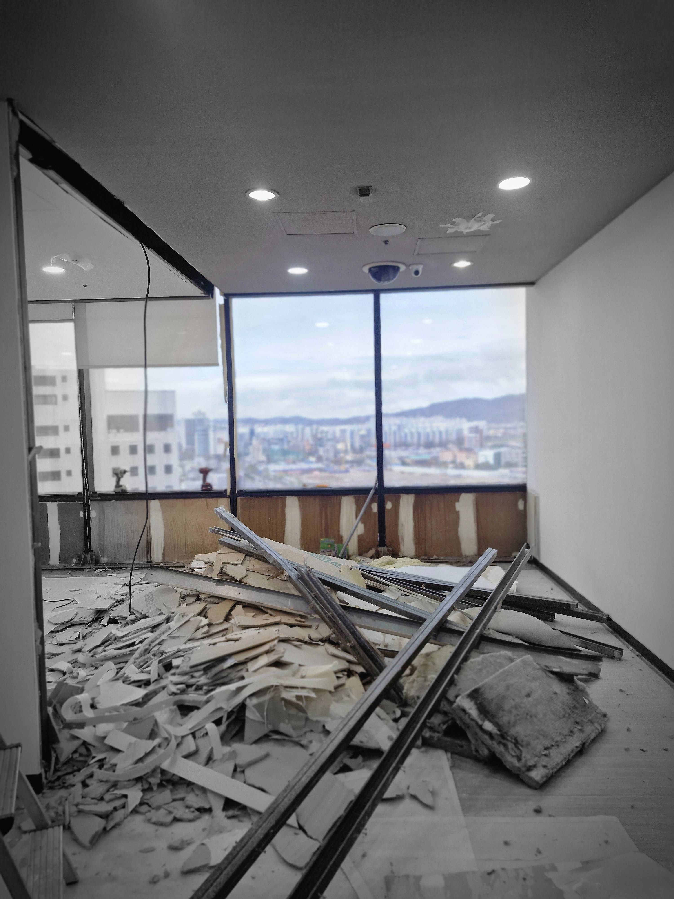
DEMOLITION : 비움의 미학
새로운 질서를 세우기 위해 낡은 구조를 걷어냅니다.
비워진 자리에 채워질 4인의 가능성을 위해 현장을 깨끗하게 정리합니다.
04
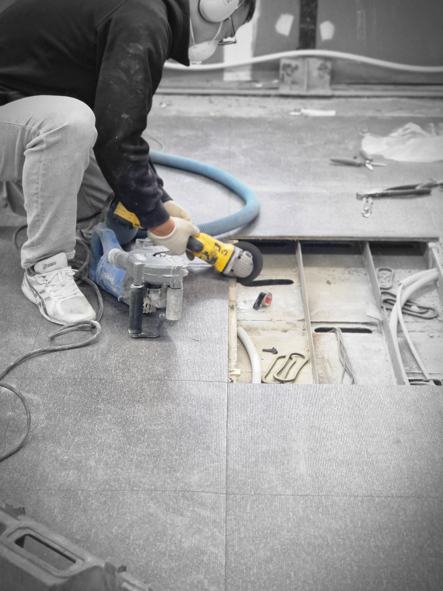
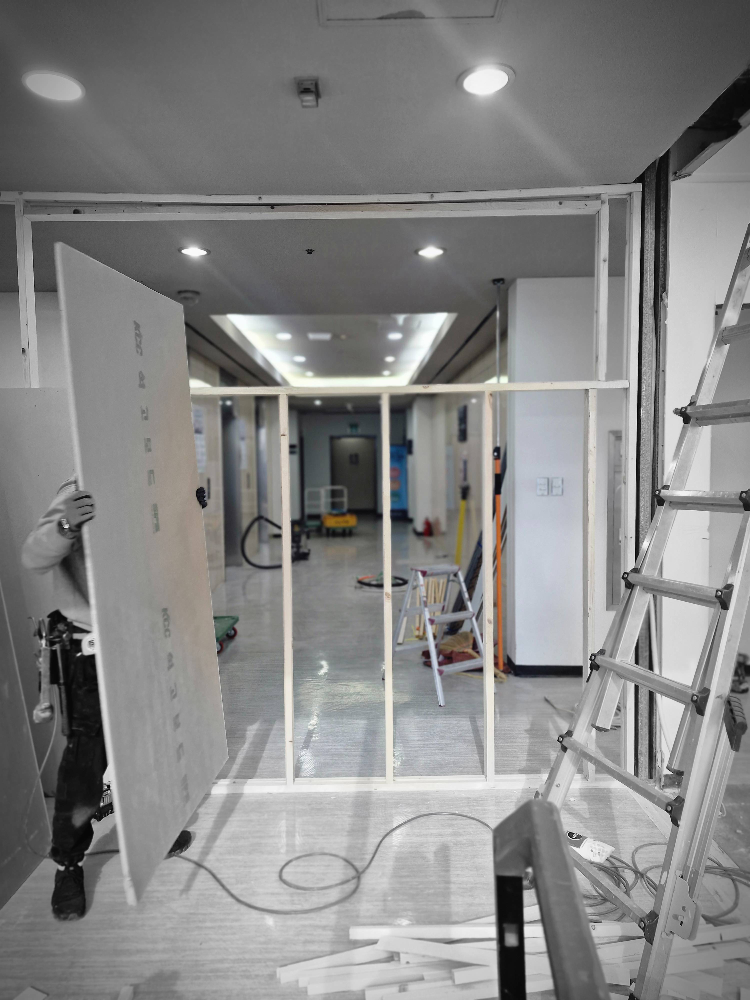
STRUCTURE : 빛을 담는 틀
경량 벽체로 공간을 나누되, 채광용 창틀을 시공하여 개방감을 확보했습니다.
좁은 공간일수록 빛의 흐름이 끊기지 않는 것이 중요합니다.
05
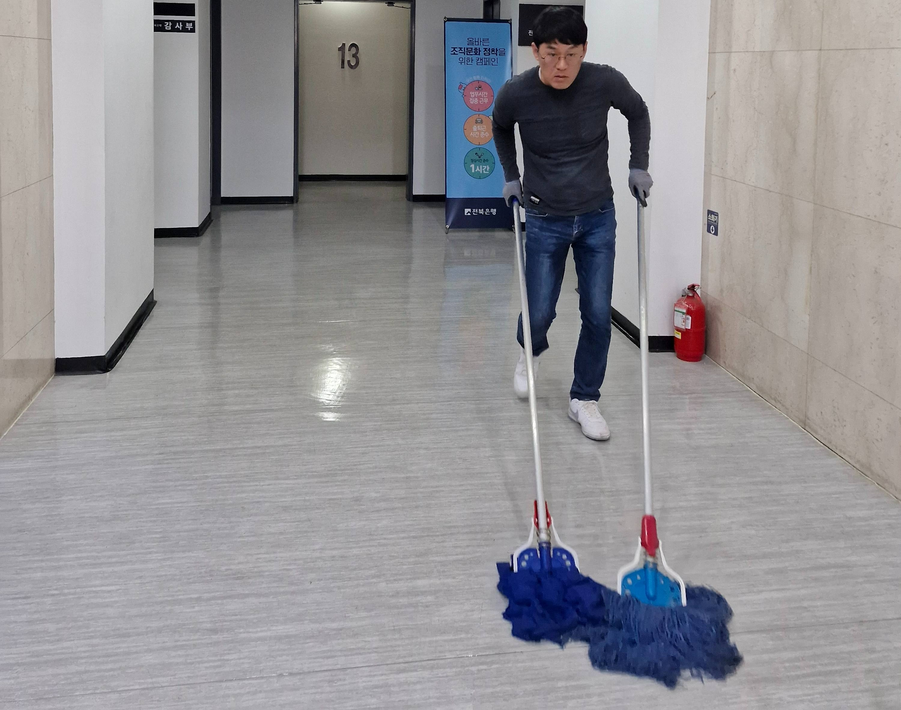
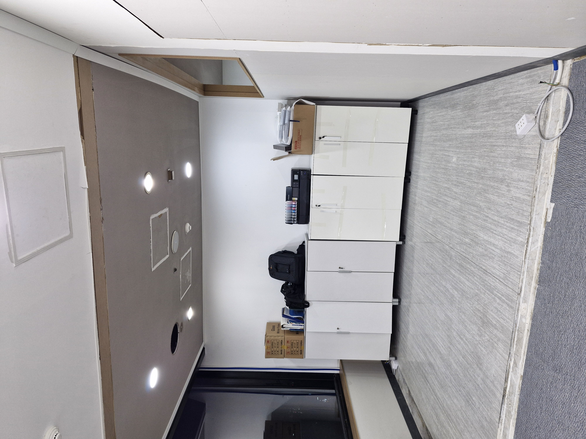
CLEARANCE : 공정의 예의
기초 공사를 마치고 다음 마감을 준비하며 현장을 정돈합니다.
보이지 않는 곳이 깨끗해야 비로소 완벽한 마감이 완성됩니다.
06
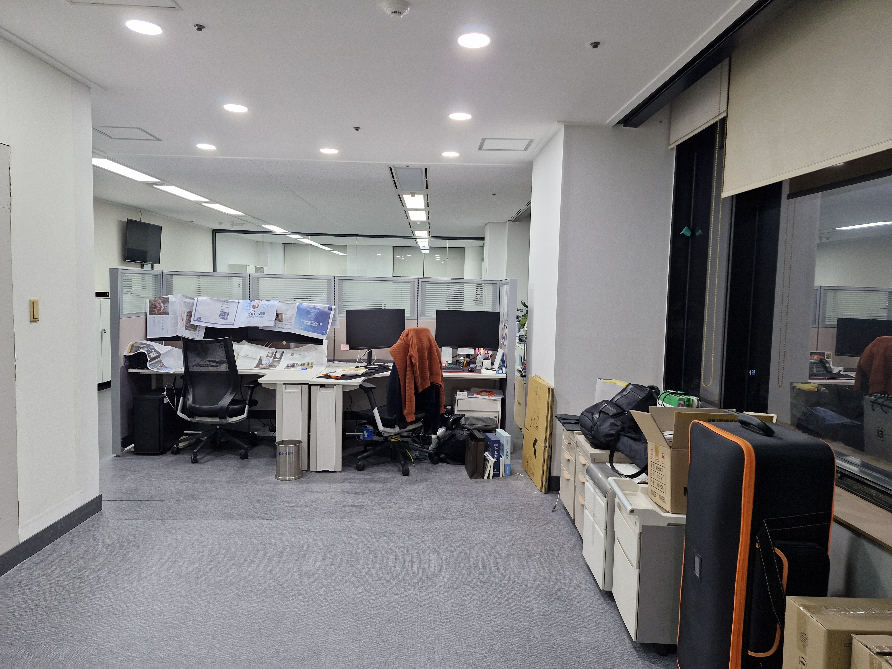
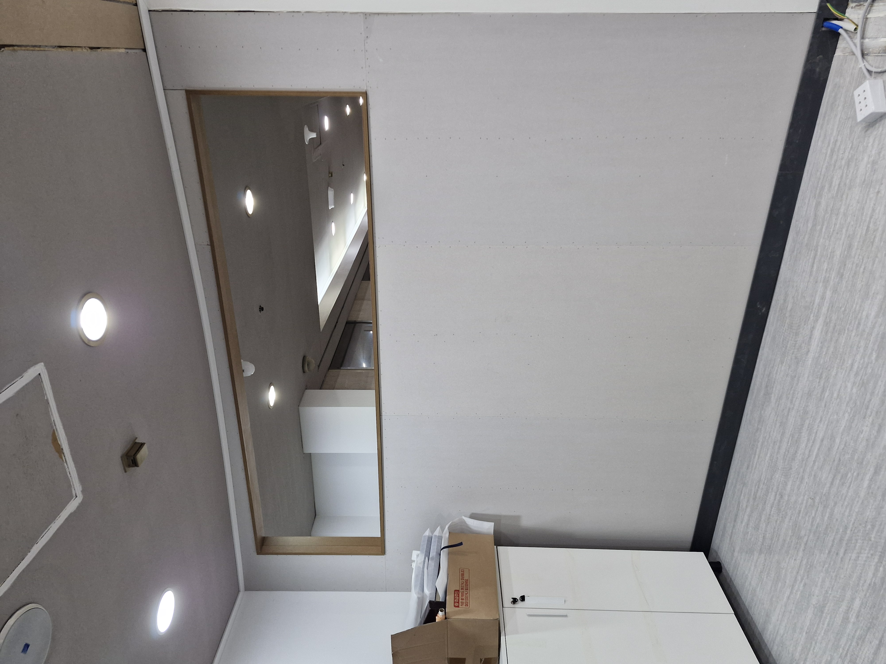
NEXT STEP : 결이 흐르는 마감
다음 주부터 도배, 데코타일, 필름 작업이 시작됩니다.
(주)결만의 **'결이 좋은'** 공간이 완성될 과정을 기대해 주세요.